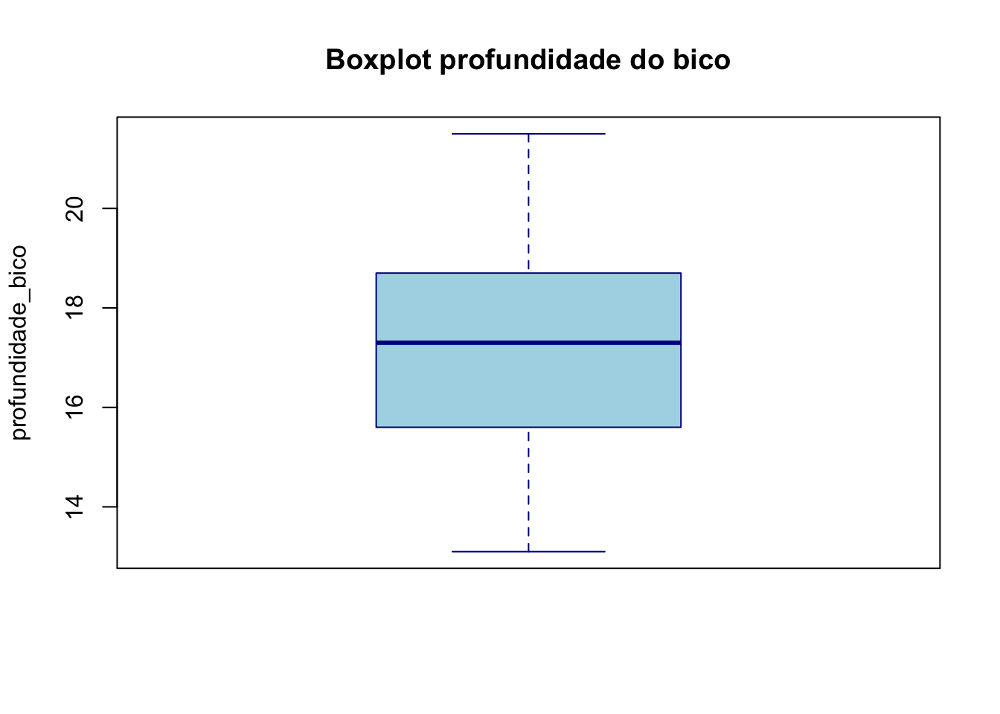
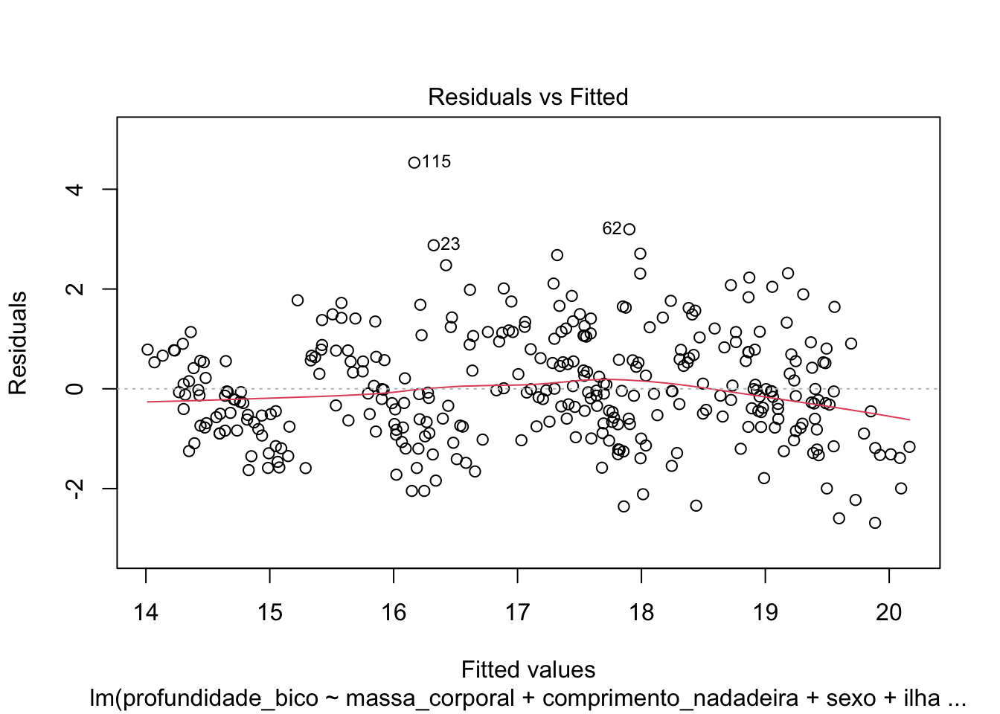
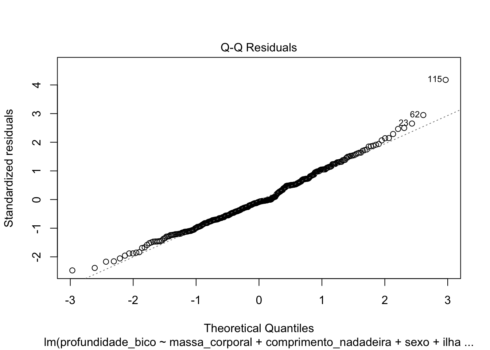

#| echo: true
# Setup para o relatório Quarto
knitr::opts_chunk$set(echo = TRUE, message = FALSE, warning = FALSE)Relatório: base de dados pinguins
1 1 - Introdução
Este relatório tem por objetivo ajustar um modelo de regressão linear múltiplo com o intuito de explorar a base de dados de pinguins para identificar determinadas características (medidas) associadas a 3 espécies de pinguins sobre a característica profundidade do bico (“profundidade_bico”).
Neste contexto, a regressão será realizada sobre a conhecida base de dados Pinguins, que inclui espécies de pinguins e ilhas do Arquipélago Palmer, as medidas de cada espécie (comprimento da nadadeira, massa corporal e dimensões do bico), o sexo de cada pinguim e ano de documentação.
Aqui estão fotos das espécies de pinguins:

2 2 - Os dados
É possível baixar os dados da biblioteca dados do R. Apenas carregando a biblioteca, um data frame chamado pinguins fica disponibilizado e poderá ser usado imediatamente. Para a visualização das características dos dados utiliza-se o glimpse da biblioteca dplyr, que informa a quantidade de linhas, colunas e as variáveis. Para ter acesso faça os seguintes passos:
library(dados)
library(dplyr)
glimpse(pinguins)Rows: 344
Columns: 8
$ especie <fct> Pinguim-de-adélia, Pinguim-de-adélia, Pinguim-de…
$ ilha <fct> Torgersen, Torgersen, Torgersen, Torgersen, Torg…
$ comprimento_bico <dbl> 39.1, 39.5, 40.3, NA, 36.7, 39.3, 38.9, 39.2, 34…
$ profundidade_bico <dbl> 18.7, 17.4, 18.0, NA, 19.3, 20.6, 17.8, 19.6, 18…
$ comprimento_nadadeira <int> 181, 186, 195, NA, 193, 190, 181, 195, 193, 190,…
$ massa_corporal <int> 3750, 3800, 3250, NA, 3450, 3650, 3625, 4675, 34…
$ sexo <fct> macho, fêmea, fêmea, NA, fêmea, macho, fêmea, ma…
$ ano <int> 2007, 2007, 2007, 2007, 2007, 2007, 2007, 2007, …unique(pinguins$especie) # verifica as espécies distintas[1] Pinguim-de-adélia Pinguim-gentoo Pinguim-de-barbicha
Levels: Pinguim-de-adélia Pinguim-de-barbicha Pinguim-gentootable(pinguins$especie) # Frequencias por espécie
Pinguim-de-adélia Pinguim-de-barbicha Pinguim-gentoo
152 68 124 Visualizando rapidamente a estrutura da base de dados, observamos as seguintes variáveis:
especie: espécies de pinguim (Pinguim-de-adélia, Pinguim-de-barbicha e Pinguim-gentoo);ilha: ilha do Arquipélago Palmer na Antártida (Biscoe, Dream, Togersen);comprimento_bico: número inteiro que indica o comprimento do bico (em milímetros);profundidade_bico: número inteiro que indica a profundidade do bico (em milímetros);comprimento_nadadeira: número inteiro que indica o comprimento da nadadeira (em milímetros);massa_corporal: número inteiro que indica a massa corporal (em gramas);sexo: fator que indica o sexo do(a) pinguim (macho, fêmea);ano: número inteiro que indica o ano da coleta dos dados (2007, 2008 ou 2009).
2.1 2.1 - Análise exploratória dos dados
library(skimr)
dados <- pinguins
skim(dados)| Name | dados |
| Number of rows | 344 |
| Number of columns | 8 |
| _______________________ | |
| Column type frequency: | |
| factor | 3 |
| numeric | 5 |
| ________________________ | |
| Group variables | None |
Variable type: factor
| skim_variable | n_missing | complete_rate | ordered | n_unique | top_counts |
|---|---|---|---|---|---|
| especie | 0 | 1.00 | FALSE | 3 | Pin: 152, Pin: 124, Pin: 68 |
| ilha | 0 | 1.00 | FALSE | 3 | Bis: 168, Dre: 124, Tor: 52 |
| sexo | 11 | 0.97 | FALSE | 2 | mac: 168, fêm: 165 |
Variable type: numeric
| skim_variable | n_missing | complete_rate | mean | sd | p0 | p25 | p50 | p75 | p100 | hist |
|---|---|---|---|---|---|---|---|---|---|---|
| comprimento_bico | 2 | 0.99 | 43.92 | 5.46 | 32.1 | 39.23 | 44.45 | 48.5 | 59.6 | ▃▇▇▆▁ |
| profundidade_bico | 2 | 0.99 | 17.15 | 1.97 | 13.1 | 15.60 | 17.30 | 18.7 | 21.5 | ▅▅▇▇▂ |
| comprimento_nadadeira | 2 | 0.99 | 200.92 | 14.06 | 172.0 | 190.00 | 197.00 | 213.0 | 231.0 | ▂▇▃▅▂ |
| massa_corporal | 2 | 0.99 | 4201.75 | 801.95 | 2700.0 | 3550.00 | 4050.00 | 4750.0 | 6300.0 | ▃▇▆▃▂ |
| ano | 0 | 1.00 | 2008.03 | 0.82 | 2007.0 | 2007.00 | 2008.00 | 2009.0 | 2009.0 | ▇▁▇▁▇ |
2.1.1 2.1.1 - Comentários:
…
2.1.2 2.1.2 - Editar:
Através da visão geral resumida do dataframe é possível obter um resumo de várias estatísticas descritivas e informações sobre cada coluna do dataframe dados (pinguins).
Resumo das Colunas: cada coluna do dataframe é listada com seu nome e o tipo de dado de cada coluna é mostrado.
Estatísticas Descritivas: número de valores (n), média, mediana, mínimo, máximo, desvio padrão e outros quantis (percentis).
Valores Faltantes: Um resumo da quantidade de valores faltantes (NA) para cada coluna.
2.2 Análise de correlação
library(GGally) # Pacote para função ggpairs
library(ggplot2) # Pacote para salvar gráficos
### Multicolinearidade: r > 0.9 (ou 0.8)
graf1 <- ggpairs(pinguins, columns = 3:6, ggplot2::aes(colour = especie)) +
theme(
axis.text.x = element_text(size = 8), # Aumenta o texto no eixo X
axis.text.y = element_text(size = 8), # Aumenta o texto no eixo Y
strip.text = element_text(size = 6), # Aumenta os rótulos das facetas
legend.text = element_text(size = 8)
)
graf1
# Salvando o gráfico em .jpeg
ggsave("Grafico_dispersao_pinguins.jpeg")2.2.1 Comentários
…
2.2.2 Editar:
Com relação à análise de correlação é algo desejável observar altas correlações das variáveis independentes com relação à variável dependente/resposta que no presente caso é profundidade do bico (profundidade_bico).
Por outro lado, altas correlações entre as demais variáveis a serem utilizadas como variáveis independentes/preditoras nos dá indícios de que haverá problemas de multicolinearidade ao ajustar o MRLM. Como regra geral isto ocorre quando há correlações \(\geq 0.9\) ou \(\geq 0.8\) entre as variáveis preditoras.
Dito isto, é possível observar que:
- A variável dependente
profundidade_bico:
- apresenta correlação linear significante com a variável
comprimento_bico(r= -0.235, p < 0.001);
Como esta correlação, em valor absoluto não é superior a 0.9 (ou 0.8) não há indício para um posterior problema de multicolinearidade.
- apresenta correlação linear significante com a variável
comprimento_nadadeira(r= -0.584, p < 0.001);
Como esta correlação, em valor absoluto não é superior a 0.9 (ou 0.8) não há indício para um posterior problema de multicolinearidade.
- apresenta correlação linear significante com a variável
massa_corporal(r= -0.472, p < 0.001);
- A variável independente
comprimento_bico:
- apresenta correlação linear significativa com a variável independente
comprimento_nadadeira(r=0.656, p < 0.001).
Como esta correlação, em valor absoluto não é superior a 0.9 (ou 0.8) não há indício para um posterior problema de multicolinearidade.
- apresenta correlação linear significativa com a variável independente
massa_corporal(r=0.595, p < 0.001).
Como esta correlação, em valor absoluto não é superior a 0.9 (ou 0.8) não há indício para um posterior problema de multicolinearidade.
- A variável independente
comprimento_nadadeira:
- apresenta correlação linear significativa com a variável independente
massa_corporal(r=0.871, p < 0.001).
Como esta correlação, em valor absoluto é superior a 0.8 há indício para um posterior problema de multicolinearidade. Observa-se, ainda, que tal correlação é do tipo forte e positiva, ou seja, as medidas associadas aos pinguins se relacionam de forma fortemente positiva.
2.2.3 Analisando o VIF
O Fator de Inflação de Variância (VIF) é uma forma de identificar multicolinearidade.
Para investigar mais sobre multicolinearidade, sugerimos a leitura do seguinte material: https://www.statology.org/multicollinearity-regression/
O VIF é calculado da seguinte forma:
Para cada variável independente faz-se uma regressão linear dessa variável para todas as outras variáveis independentes, obtendo o \(R^2\) dessa regressão.
Com o \(R^2\), o VIF = 1/(1 - \(R^2\))
Por convenção, um VIF > 10 indica um problema de multicolinearidade.
#Modelo inicial com todas as variáveis
modelo1 <- lm(profundidade_bico ~ comprimento_bico + massa_corporal + comprimento_nadadeira + sexo + ano + ilha + especie, data = pinguins)
library(car)
vif(modelo1) GVIF Df GVIF^(1/(2*Df))
comprimento_bico 6.167650 1 2.483475
massa_corporal 7.892055 1 2.809280
comprimento_nadadeira 8.377861 1 2.894453
sexo 2.483368 1 1.575871
ano 1.163562 1 1.078685
ilha 3.756428 2 1.392175
especie 45.302557 2 2.594363Como pode-se observar, a variável especie possui um VIF de aproximadamente 45, por ser maior que 10, há um problema de multicolinearidade.
3 3 - Modelos
3.1 3.1 - Modelo 1: Com todas as variáveis independentes.
Como vimos anteriormente, o modelo 1 se dá com todas as variáveis disponíveis.
summary(modelo1)
Call:
lm(formula = profundidade_bico ~ comprimento_bico + massa_corporal +
comprimento_nadadeira + sexo + ano + ilha + especie, data = pinguins)
Residuals:
Min 1Q Median 3Q Max
-2.02812 -0.53903 0.00004 0.43546 2.71777
Coefficients:
Estimate Std. Error t value Pr(>|t|)
(Intercept) 3.095e+02 1.144e+02 2.706 0.00718 **
comprimento_bico 4.110e-02 1.959e-02 2.098 0.03665 *
massa_corporal 4.574e-04 1.505e-04 3.040 0.00256 **
comprimento_nadadeira 2.705e-02 8.907e-03 3.037 0.00258 **
sexomacho 8.632e-01 1.357e-01 6.359 6.91e-10 ***
ano -1.494e-01 5.723e-02 -2.610 0.00948 **
ilhaDream -1.641e-01 1.599e-01 -1.026 0.30567
ilhaTorgersen -3.508e-03 1.671e-01 -0.021 0.98327
especiePinguim-de-barbicha -4.166e-01 2.462e-01 -1.692 0.09163 .
especiePinguim-gentoo -5.150e+00 3.059e-01 -16.834 < 2e-16 ***
---
Signif. codes: 0 '***' 0.001 '**' 0.01 '*' 0.05 '.' 0.1 ' ' 1
Residual standard error: 0.7859 on 323 degrees of freedom
(11 observations deleted due to missingness)
Multiple R-squared: 0.8451, Adjusted R-squared: 0.8407
F-statistic: 195.7 on 9 and 323 DF, p-value: < 2.2e-16Ao observar os dados, percebe-se uma contradição no que se diz respeito as variáveis comprimento_bico, massa_corporal e comprimento_nadadeira, uma vez que os coeficientes de Pearson de cada são negativos, mas as estimativas dos mesmos são positivos.
3.2 3.2 - Modelo 2: Sem a variável espécie.
Por a variável espécie possuir um VIF elevado, vamos montar nosso modelo 2 sem a mesma.
modelo2 <- update(modelo1, ~ . -especie)
summary(modelo2)
Call:
lm(formula = profundidade_bico ~ comprimento_bico + massa_corporal +
comprimento_nadadeira + sexo + ano + ilha, data = pinguins)
Residuals:
Min 1Q Median 3Q Max
-2.7329 -0.7450 -0.1286 0.6913 4.4479
Coefficients:
Estimate Std. Error t value Pr(>|t|)
(Intercept) -1.124e+02 1.550e+02 -0.725 0.46888
comprimento_bico 9.445e-03 1.680e-02 0.562 0.57446
massa_corporal -5.304e-04 1.885e-04 -2.814 0.00518 **
comprimento_nadadeira -5.480e-02 1.057e-02 -5.184 3.82e-07 ***
sexomacho 2.194e+00 1.486e-01 14.766 < 2e-16 ***
ano 7.010e-02 7.738e-02 0.906 0.36567
ilhaDream 1.032e+00 1.849e-01 5.584 4.97e-08 ***
ilhaTorgersen 1.127e+00 2.150e-01 5.239 2.91e-07 ***
---
Signif. codes: 0 '***' 0.001 '**' 0.01 '*' 0.05 '.' 0.1 ' ' 1
Residual standard error: 1.095 on 325 degrees of freedom
(11 observations deleted due to missingness)
Multiple R-squared: 0.697, Adjusted R-squared: 0.6905
F-statistic: 106.8 on 7 and 325 DF, p-value: < 2.2e-16Observando os dados, percebe-se que a variável comprimento_bico ainda continua contraditória, uma vez que sua estimativa é positiva e o Coeficiente de Pearson negativa. Ademais, o seu valor p é de aproximadamente 0.57, ou seja, não é significativo.
Além da variável comprimento_bico, a variável anoapresenta um valor p > 0.1, alto o suficiente para não ser significante.
3.3 3.3 - Modelo 3: Sem as variáveis especie e ano.
Então, construimos um terceiro modelo, dessa vez retirando não só a variável espécie, mas também a variável ano. De início, não retiremos a comprimento_bico para analisar seu comportamento, como também das demais variáveis.
modelo3 <- update(modelo2, ~ . -ano)
summary(modelo3)
Call:
lm(formula = profundidade_bico ~ comprimento_bico + massa_corporal +
comprimento_nadadeira + sexo + ilha, data = pinguins)
Residuals:
Min 1Q Median 3Q Max
-2.6652 -0.7570 -0.0978 0.6691 4.5297
Coefficients:
Estimate Std. Error t value Pr(>|t|)
(Intercept) 28.0101282 1.3710360 20.430 < 2e-16 ***
comprimento_bico 0.0081433 0.0167377 0.487 0.6269
massa_corporal -0.0005690 0.0001835 -3.100 0.0021 **
comprimento_nadadeira -0.0520587 0.0101260 -5.141 4.72e-07 ***
sexomacho 2.2059792 0.1480103 14.904 < 2e-16 ***
ilhaDream 1.0307490 0.1848251 5.577 5.15e-08 ***
ilhaTorgersen 1.1245487 0.2149605 5.231 3.02e-07 ***
---
Signif. codes: 0 '***' 0.001 '**' 0.01 '*' 0.05 '.' 0.1 ' ' 1
Residual standard error: 1.095 on 326 degrees of freedom
(11 observations deleted due to missingness)
Multiple R-squared: 0.6963, Adjusted R-squared: 0.6907
F-statistic: 124.6 on 6 and 326 DF, p-value: < 2.2e-16O modelo 3 apresenta que a varriável comprimento_bico apesar de ter diminuido seu estimador, continua positivo contrariando o Coeficiente de Pearson, além do seu alto valor p.
3.4 3.4 - Modelo 4: Sem as variáveis espécie, ano e comprimento_bico.
modelo4 <- update(modelo3, ~. -comprimento_bico)
summary(modelo4)
Call:
lm(formula = profundidade_bico ~ massa_corporal + comprimento_nadadeira +
sexo + ilha, data = pinguins)
Residuals:
Min 1Q Median 3Q Max
-2.6861 -0.7580 -0.0936 0.6901 4.5334
Coefficients:
Estimate Std. Error t value Pr(>|t|)
(Intercept) 27.9043913 1.3521204 20.638 < 2e-16 ***
massa_corporal -0.0005633 0.0001829 -3.079 0.00225 **
comprimento_nadadeira -0.0499521 0.0091429 -5.464 9.26e-08 ***
sexomacho 2.2176123 0.1458956 15.200 < 2e-16 ***
ilhaDream 1.0626246 0.1726214 6.156 2.19e-09 ***
ilhaTorgersen 1.1179289 0.2142790 5.217 3.23e-07 ***
---
Signif. codes: 0 '***' 0.001 '**' 0.01 '*' 0.05 '.' 0.1 ' ' 1
Residual standard error: 1.094 on 327 degrees of freedom
(11 observations deleted due to missingness)
Multiple R-squared: 0.6961, Adjusted R-squared: 0.6914
F-statistic: 149.8 on 5 and 327 DF, p-value: < 2.2e-16Este modelo 4 por sua vez apresenta coerência nos estimadores das variáveis analisadas na Análise Exploratória com seus respectivos Coeficientes de Pearson. Além do mais, ao observar o valor p, todas as variáveis apresentam significância.
4 4 - Métodos para selecionar o melhor modelo.
Por existir problema de multicolinearidade no modelo 1, ele não é considerado na seleção.
4.1 4.1 - Medida AIC
A medida AIC determina que o melhor modelo é o que apresenta o menor valor.
AIC(modelo1)[1] 796.3882AIC(modelo2)[1] 1015.66AIC(modelo3)[1] 1014.499AIC(modelo4)[1] 1012.741Apesar de bem próximos e pela regra não há um indício significativo de real diferença, uma vez que a diferença entre os modelos não é maior que 10. O modelo 4 é preferível aos demais por ser o menor.
4.2 4.2 - Medida BIC
Analogamente ao AIC, a medida BIC determina que o melhor modelo é aquele que apresentar menor valor.
BIC(modelo1)[1] 838.2777BIC(modelo2)[1] 1049.933BIC(modelo3)[1] 1044.964BIC(modelo4)[1] 1039.398O modelo 4 apresenta uma diferença maior que 10 ao modelo 2, então há um indício de real diferença entre modelos. Embora essa diferença não ocorra entre os modelos 3 e 4, o modelo 4 é menor, e portanto, preferível.
4.3 4.3 - Comparação de modelos encaixados (ANOVA)
anova(modelo1, modelo2)Analysis of Variance Table
Model 1: profundidade_bico ~ comprimento_bico + massa_corporal + comprimento_nadadeira +
sexo + ano + ilha + especie
Model 2: profundidade_bico ~ comprimento_bico + massa_corporal + comprimento_nadadeira +
sexo + ano + ilha
Res.Df RSS Df Sum of Sq F Pr(>F)
1 323 199.49
2 325 390.04 -2 -190.55 154.26 < 2.2e-16 ***
---
Signif. codes: 0 '***' 0.001 '**' 0.01 '*' 0.05 '.' 0.1 ' ' 1Observa-se que pelo teste F deve rejeitar a hipótese nula e com isso, a remoção da variável especie é significante para a regressão.
anova(modelo1, modelo3)Analysis of Variance Table
Model 1: profundidade_bico ~ comprimento_bico + massa_corporal + comprimento_nadadeira +
sexo + ano + ilha + especie
Model 2: profundidade_bico ~ comprimento_bico + massa_corporal + comprimento_nadadeira +
sexo + ilha
Res.Df RSS Df Sum of Sq F Pr(>F)
1 323 199.49
2 326 391.02 -3 -191.53 103.37 < 2.2e-16 ***
---
Signif. codes: 0 '***' 0.001 '**' 0.01 '*' 0.05 '.' 0.1 ' ' 1Observa-se que pelo teste F deve rejeitar a hipótese nula e com isso, a remoção das variáveis especie e ano são significantes para a regressão.
anova(modelo1, modelo4)Analysis of Variance Table
Model 1: profundidade_bico ~ comprimento_bico + massa_corporal + comprimento_nadadeira +
sexo + ano + ilha + especie
Model 2: profundidade_bico ~ massa_corporal + comprimento_nadadeira +
sexo + ilha
Res.Df RSS Df Sum of Sq F Pr(>F)
1 323 199.49
2 327 391.31 -4 -191.82 77.645 < 2.2e-16 ***
---
Signif. codes: 0 '***' 0.001 '**' 0.01 '*' 0.05 '.' 0.1 ' ' 1Observa-se que pelo teste F deve rejeitar a hipótese nula e com isso, a remoção das variáveis especie, ano e comprimento_bico são significantes para a regressão.
anova(modelo2, modelo3)Analysis of Variance Table
Model 1: profundidade_bico ~ comprimento_bico + massa_corporal + comprimento_nadadeira +
sexo + ano + ilha
Model 2: profundidade_bico ~ comprimento_bico + massa_corporal + comprimento_nadadeira +
sexo + ilha
Res.Df RSS Df Sum of Sq F Pr(>F)
1 325 390.04
2 326 391.02 -1 -0.98484 0.8206 0.3657Observa-se que pelo teste F não deve rejeitar a hipótese nula, logo a remoção da variável ano não melhora significamente.
anova(modelo2, modelo4)Analysis of Variance Table
Model 1: profundidade_bico ~ comprimento_bico + massa_corporal + comprimento_nadadeira +
sexo + ano + ilha
Model 2: profundidade_bico ~ massa_corporal + comprimento_nadadeira +
sexo + ilha
Res.Df RSS Df Sum of Sq F Pr(>F)
1 325 390.04
2 327 391.31 -2 -1.2688 0.5286 0.5899Observa-se que pelo teste F não deve rejeitar a hipótese nula, logo a remoção da variável ano e da comprimento_bico não melhora significamente.
anova(modelo3, modelo4)Analysis of Variance Table
Model 1: profundidade_bico ~ comprimento_bico + massa_corporal + comprimento_nadadeira +
sexo + ilha
Model 2: profundidade_bico ~ massa_corporal + comprimento_nadadeira +
sexo + ilha
Res.Df RSS Df Sum of Sq F Pr(>F)
1 326 391.02
2 327 391.31 -1 -0.28392 0.2367 0.6269Observa-se que pelo teste F não deve rejeitar a hipótese nula, logo a remoção da variável comprimento_bico não melhora significamente.
5 5 - Seleção automática
5.1 5.1 A partir do modelo 1
step(modelo1)Start: AIC=-150.62
profundidade_bico ~ comprimento_bico + massa_corporal + comprimento_nadadeira +
sexo + ano + ilha + especie
Df Sum of Sq RSS AIC
- ilha 2 0.898 200.39 -153.130
<none> 199.49 -150.625
- comprimento_bico 1 2.719 202.21 -148.116
- ano 1 4.207 203.70 -145.675
- comprimento_nadadeira 1 5.698 205.19 -143.247
- massa_corporal 1 5.706 205.19 -143.234
- sexo 1 24.977 224.47 -113.342
- especie 2 190.548 390.04 68.646
Step: AIC=-153.13
profundidade_bico ~ comprimento_bico + massa_corporal + comprimento_nadadeira +
sexo + ano + especie
Df Sum of Sq RSS AIC
<none> 200.39 -153.13
- comprimento_bico 1 2.959 203.35 -150.25
- ano 1 4.181 204.57 -148.25
- massa_corporal 1 5.731 206.12 -145.74
- comprimento_nadadeira 1 5.825 206.21 -145.59
- sexo 1 24.644 225.03 -116.51
- especie 2 237.085 437.47 102.86
Call:
lm(formula = profundidade_bico ~ comprimento_bico + massa_corporal +
comprimento_nadadeira + sexo + ano + especie, data = pinguins)
Coefficients:
(Intercept) comprimento_bico
3.071e+02 4.277e-02
massa_corporal comprimento_nadadeira
4.577e-04 2.700e-02
sexomacho ano
8.562e-01 -1.483e-01
especiePinguim-de-barbicha especiePinguim-gentoo
-5.340e-01 -5.101e+00 Pela seleção automática, a partir do modelo 1, observa-se que o melhor modelo seria o modelo 1. Porém, como observado anteriormente, este modelo possui problema de multicolinearidade e por isso, não deve ser considerado e a seleção automática não deve levar em consideração a variável especie. ## 5.2 A partir do modelo 2
step(modelo2)Start: AIC=68.65
profundidade_bico ~ comprimento_bico + massa_corporal + comprimento_nadadeira +
sexo + ano + ilha
Df Sum of Sq RSS AIC
- comprimento_bico 1 0.379 390.42 66.970
- ano 1 0.985 391.02 67.486
<none> 390.04 68.646
- massa_corporal 1 9.506 399.54 74.665
- comprimento_nadadeira 1 32.254 422.29 93.104
- ilha 2 47.435 437.47 102.865
- sexo 1 261.659 651.70 237.588
Step: AIC=66.97
profundidade_bico ~ massa_corporal + comprimento_nadadeira +
sexo + ano + ilha
Df Sum of Sq RSS AIC
- ano 1 0.890 391.31 65.728
<none> 390.42 66.970
- massa_corporal 1 9.362 399.78 72.861
- comprimento_nadadeira 1 36.047 426.46 94.378
- ilha 2 51.639 442.05 104.336
- sexo 1 272.685 663.10 241.365
Step: AIC=65.73
profundidade_bico ~ massa_corporal + comprimento_nadadeira +
sexo + ilha
Df Sum of Sq RSS AIC
<none> 391.31 65.728
- massa_corporal 1 11.347 402.65 73.247
- comprimento_nadadeira 1 35.720 427.03 92.817
- ilha 2 51.248 442.55 102.711
- sexo 1 276.474 667.78 241.706
Call:
lm(formula = profundidade_bico ~ massa_corporal + comprimento_nadadeira +
sexo + ilha, data = pinguins)
Coefficients:
(Intercept) massa_corporal comprimento_nadadeira
27.9043913 -0.0005633 -0.0499521
sexomacho ilhaDream ilhaTorgersen
2.2176123 1.0626246 1.1179289 Como pode ser observado, o modelo 4 foi o selecionado.
6 6 - Modelo selecionado (modelo4)
A partir das analises feitas até o momento e tendo como objetivo realizar previsões e as interpretá-las, como também verificar os pressupostos do Modelo de Regressão Linear Múltipla (MRLM) é o modelo 4.
6.1 6.1 - Verificando os pressupostos do MRLM
plot(modelo4)
